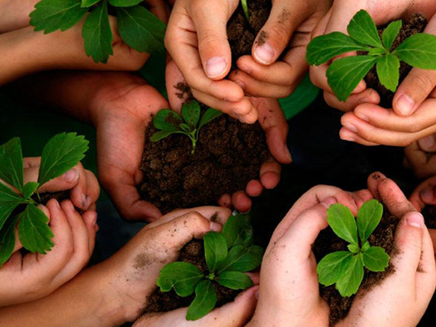
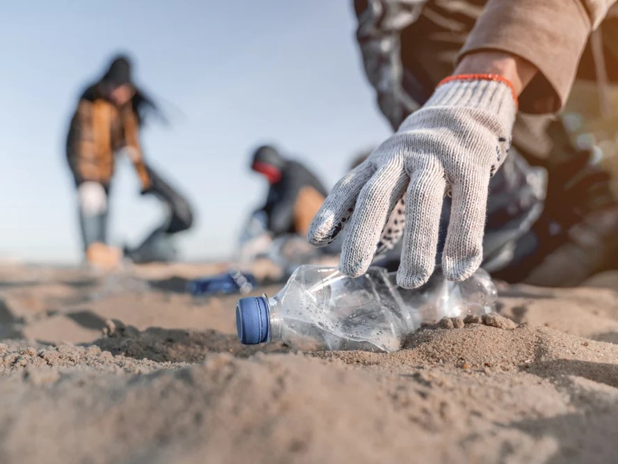
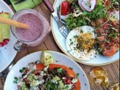
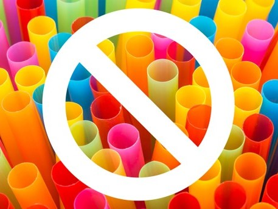

Ananya's Eco-Corridor, Pune: Ananya, a resident of Pune, noticed the escalating pollution in her locality. Instead of turning a blind eye, she initiated a tree-planting campaign along a neglected stretch of land. The initiative not only beautified the area but also inspired locals to take up the cause. Soon, what was once a barren corridor became a thriving eco-space, setting an example for other neighborhoods across Pune.
Arjun's Pedal Revolution in Jaipur: Arjun, frustrated with the traffic snarls and air pollution in Jaipur, decided to ditch his motorbike for a bicycle. His commitment to eco-friendly commuting gained attention, and he soon organized "Cycle Yatras" encouraging others to join. The movement gained traction, transforming Jaipur into a city where cycling wasn't just a mode of transport but a lifestyle, significantly reducing emissions and promoting a healthier community.

Meera's Vizag Beach Cleanup: Meera, a resident of Visakhapatnam, couldn't stand the sight of plastic litter on her favorite beach. Armed with determination, she organized weekly beach cleanups, drawing in volunteers from all walks of life. The movement snowballed, turning into a citywide coastal cleanup brigade. Meera's efforts not only restored the pristine beauty of Vizag's beaches but also ignited a broader awareness about responsible waste disposal.
Rohan's Organic Kitchen in Bangalore: Chef Rohan, managing a popular restaurant in Bangalore, decided to tackle food waste and unsustainable sourcing. By implementing composting and sourcing ingredients locally, he set a new standard for sustainable dining. Other chefs in Bangalore soon followed suit, turning the city into a hub for eco-friendly gastronomy. Rohan's kitchen revolution not only delighted taste buds but also set the stage for a broader movement towards sustainable dining practices.


Priya's Straw Ban in Mumbai: Priya, a college student in Mumbai, was appalled by the plastic waste generated by single-use straws. She spearheaded a campaign to eliminate straws from her college campus and partnered with local businesses to adopt sustainable alternatives. What began as a campus initiative gained momentum, leading to a citywide movement. Priya's simple idea of going straw-free had a profound impact on reducing plastic pollution, inspiring other communities across Mumbai to follow suit.